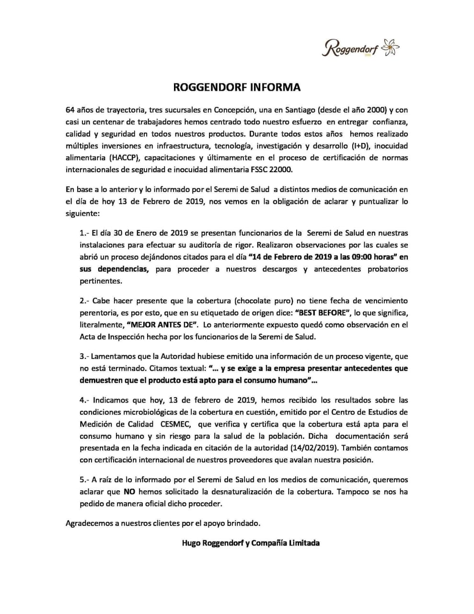

MINSAL RETIRA MÁS DE 1 TONELADA DE INGREDIENTES VENCIDOS DESDE TRADICIONAL PASTELERÍA EN CONCEPCIÓN
La Seremi de Salud del Bío Bío retuvo más de una tonelada de materias primas vencidas desde la fábrica de pasteles y chocolates Roggendorf en Concepción.
En los próximos días, los productos serían destinados a un vertedero, mientras se realiza la investigación sanitaria respectiva en la tradicional pastelería.
En medio de una fiscalización rutinaria del órgano sanitario, se encontraron más de 1.200 kilos de productos vencidos al interior de la fábrica de la pastelería Roggendorf, entre los que se encuentran insumos de repostería y coberturas de chocolate. Si bien no se pudo comprobar en el lugar que los productos estaban destinados a la elaboración de tortas y pasteles, la autoridad regional de Salud, Héctor Muñoz, dijo que se abrió un sumario sanitario para indagar la mantención de insumos vencidos. Muñoz además recalcó que muchos de estos productos habían expirado su fecha de vencimiento hace varios años. Durante 2018, el Minsal realizó cerca de 4 mil fiscalizaciones mediante la Unidad de Seguridad Alimentaria, dando origen a un total de 1.293 sumarios.
“BEST BEFORE”
Por su parte, la empresa emitió un comunicado donde aclara que la auditoría se realizó el pasado 30 de enero, donde quedaron citados al Servicio de Salud este 14 de febrero para presentar antecedentes.
En el documento se señala que “la cobertura (chocolate puro) no tiene fecha de vencimiento perentoria. Es por esto que en su etiquetado de origen dice ‘BEST BEFORE’, lo que significa literalmente "MEJOR ANTES DE" y que dicha observación quedó expuesta en el Acta de Inspección.
Añaden que este miércoles habrían recibido los resultados microbiológicos del producto cuestionado, desde el Centro de Estudios de Medición de Calidad (Cesmec), que “verifica y certifica que la cobertura está apta para consumo humano y sin riesgo para la salud de la población”.
Finalmente, indicaron que no han solicitado la desnaturalización del producto y que “no se ha pedido de forma oficial dicho proceder”.
